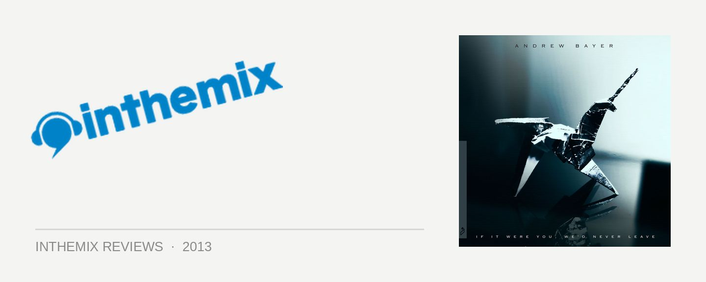

Andrew Bayer - If It Were You, We’d Never Leave
Andrew Bayer marked himself as one of the most talented and unpredictable weapons in the Anjunabeats arsenal with his 2011 debut It’s Artificial. Barely more than a year later, though, he’s followed roughly the same glitchy, downbeat template on his sophomore effort. This time, though, he’s perfected his vision to such an extent, his own debut has effectively been left in the dust.
A classically-trained musician with a Berklee degree in sound design, Bayer demonstrated a formidable flair early on for moulding his experimental tendencies into polished, accessible packages; switching from the club trance favoured by his label bosses Above & Beyond, to the swathe of deep house gems he’s released on their Anjundeep offshoot.
While It’s Artificial was an uneven record in many respects, importantly it showed Bayer was just as adept with the kind of dreamy, downbeat electronica you’d associate with leftfield stalwarts like Flying Lotus or Gold Panda. He takes this a step further on If It Were You, We’d Never Leave; brazenly, he’s eschewed anything remotely resembling a club record. He chooses instead to dive into fractured soundscapes, glitchy hip hop beats, shimmering melodies and emotional melancholy. This time though, he’s managed to connect these different brittle components into a cohesive musical tale, with an album that’s beautifully told and nearly perfectly realised.
Opening Scene sets the tone perfectly for Bayer’s odyssey; childlike chimes form a melody, which he proceeds to mischievously play with, splitting and fracturing the notes, as apocalyptic whooshes begin to catapult through the mix. Eventually, a heavy, glitchy beat ambles into the frame. There’s an unwieldy sense of menace to the opening act of the album, though it’s subdued eventually when a melancholic piano twinkle arrives on It’s Going To Be Fine.
The evolving piano melody is a musical motif that returns many times across the album. It brings a bigger scope to the journey, and plays nice with the other elements deployed to thread the songs together seamlessly; radio feedback, vinyl crackles, an assortment of field recordings.
Bayer builds into an epic wall of sound on Let’s Hear That B Section Again, a swirl of white noise that rises like a gust of wind before gently lowering again. Meanwhile, the album’s first single Lose Sight is where the album’s wobbly sounds convalesce, into what could be an RnB radio hit that’s been lovingly belted off centre. The heavily distorted vocals of Ane Brun, wonky hip hop beats and acoustic guitar strums grinded mercilessly through Bayer’s studio set-up.
This leads into the beautiful, mellow detour of All This Will Happen Again, one of several musical interludes that assists with drawing out the scope of the album, and laying the groundwork for the more energetic moments in the album’s second half. The dreamy trip hop of I Need Your Love, or the synthed-up instrumental hip hop of Farnsworth Court, which could easily have been lifted straight off one of Mark Farina’s legendary Mushroom Jazz mixes.
There’s a gob-smacking amount of sonic experimentation on If It Were You, We’d Never Leave, though Bayer’s real achievement is how he’s managed to weave all this stuttering, jittery white sound into something that carries so much musicality. Just like Vince Watson chose dreamy ambience, minus the genre’s rough edges, on Serene this year, Bayer has delivered an intoxicating, enigmatic and experimental album that people won’t have any trouble connecting with.
Lasting impressions are of a sound technician’s mastering of the technology, combined with classic musicality, plus a heavy dash of rogue Aphex Twin-style sound adventuring. If It Were You, We’d Never Leave will stack up as one of the year’s best electronic albums, and it locks in Andrew Bayer’s status as one of the next-gen’s most devilishly-talented producers.
8/10 stars